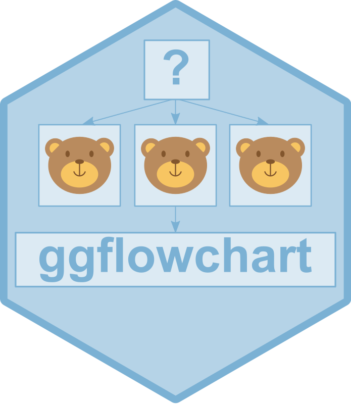

Changelog
ggflowchart 1.0.0.9000+ 2023_05_19
- Same level arrows support (issue #5)
- Add vignette on how to style nodes
- Add initial unit testing
- Add utils function to determine arrow type
- Add ability to add arrow labels (issue #15)
- Add
arrow_linewidthandarrow_linewidthas arguments (issue #14) - Add lintr checks to GH Actions
- Add
alphaas argument - Add contributor guidelines
- Allow
x_nudgeandy_nudgeto vary for each node. (issue #12) - Add option for custom layout (issue #11)
- Add option to parse text in nodes.
ggflowchart 0.0.2 2023_05_10
- Add
horizontalargument toggflowchart() - Add
arrow_sizeargument toggflowchart() - Add
text_sizeargument toggflowchart() - Add option to set
fillbased on column innode_data - Add option to set
text_colourbased on column innode_data - Update vignette examples
ggflowchart 0.0.1 2022_08_06
- Initialise package
- Adds non-exported
get_layout()to obtain centre of node positions - Adds non-exported
get_nodes()to define perimeter of node boxes - Adds non-exported
add_node_attr()to include node attributes including labels - Adds non-exported
get_edges()to define arrow start and end positions - Adds
ggflowchart()to create flowchart